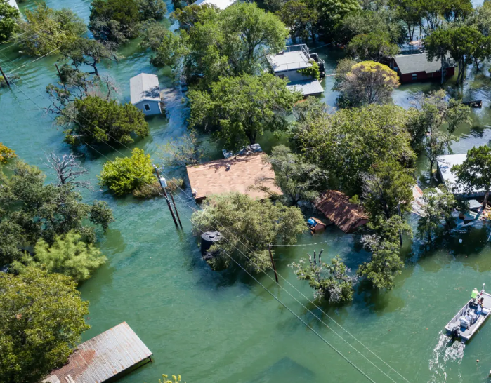
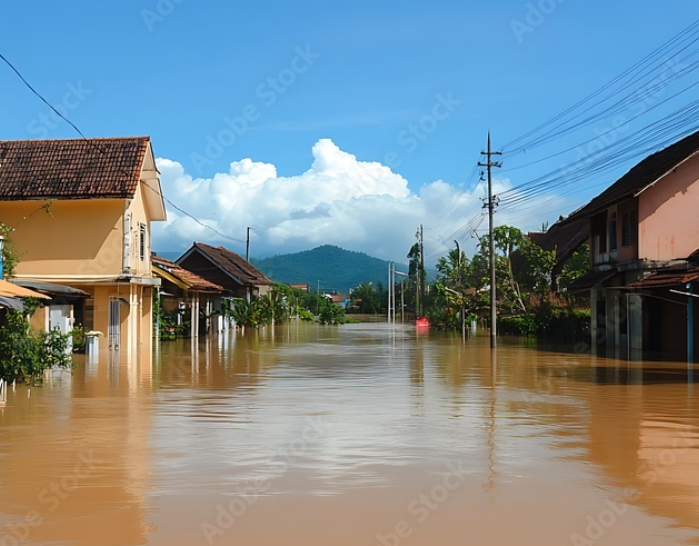
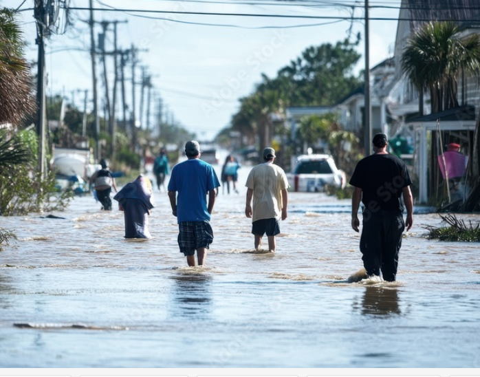

Welcome to Flood Awareness
This website aims to educate about floods, their causes, impacts, and ways to prepare and recover.
What is a Flood?
A flood is an overflow of water that submerges land which is usually dry. Flooding can occur due to heavy rainfall, snowmelt, or the failure of dams or levees.
  Flood Statistics
- Floods are the most common and widespread natural disaster.
- According to the UN, floods affect 250 million people worldwide each year.
- Economic losses from flooding exceed $100 billion annually.
- Approximately 1 in 4 people live in flood-prone areas.
Flood Management Strategies
Effective flood management involves various strategies, including:
- Flood Forecasting: Predicting flood events through meteorological data and modeling.
- Early Warning Systems: Alerting communities about impending floods to facilitate timely evacuations.
- Infrastructure Development: Building dams, levees, and retention basins to manage water flow.
- Land Use Planning: Implementing zoning regulations to minimize construction in flood-prone areas.
Recent Flood Events
Here are some significant recent flood events:
- 2023 Pakistan Floods: Heavy monsoon rains caused widespread flooding, affecting millions.
- 2023 Eastern Australia Floods: Severe flooding in New South Wales and Queensland, leading to evacuations.
- 2022 South Africa Floods: Intense rainfall in Durban resulted in catastrophic flooding, displacing thousands.
Community Responses
Communities often come together to respond to floods through:
- Volunteer Rescue Operations: Local volunteers helping with rescue and recovery efforts.
- Fundraising Initiatives: Community-driven efforts to raise funds for those affected by floods.
- Awareness Campaigns: Organizing events to educate people on flood preparedness and safety.